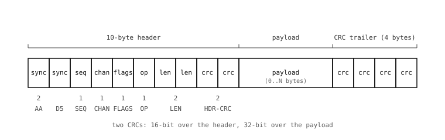

12.3. 封包格式¶
在相機與主機之間跨越線路的每一個位元組，都是某個封包的一部分。一個封包以 10 個位元組的標頭開始，接著是長度可變的酬載，最後以 4 個位元組的尾端 CRC 結束。線路上不會出現任何其他位元組——一旦主機看到 2 個位元組的同步字，接下來的位元組就是按照這個精確順序排列的標頭。

12.3.1. 標頭¶
十個位元組，緊密封裝、無填補。各欄位如下：
sync—— 16 位元的字0xD5AA，採小端序（little-endian）。線路上的位元組 0 是0xAA，位元組 1 是0xD5。掃描位元組的接收端可藉由搜尋AA D5這一對來找到封包的起點；在它之前的任何東西都視為垃圾。這個值的選擇是刻意的：0xAA與0xD5在可列印文字中很少出現，而這一對也不太可能在酬載中途意外湊出。seq—— 一個位元組。一個計數器，對於某個方向上送出的每個封包遞增一。接收端會檢查下一個封包的序號是否為預期值；若否，可靠性層便要求重傳。chan—— 一個位元組。此封包所屬的通道 ID。通道 0..31 可供使用；內建的stdin、stdout、stream以及（選用的）profile通道占用相機保留的固定 ID。flags—— 一個位元組。一個位元欄位，告訴接收端如何解讀該封包：位元 0
ACK—— 此封包是對先前某個封包的確認。位元 1
NAK—— 此封包拒絕先前某個封包。位元 2
RTX—— 此封包是一次重傳。位元 3
ACK_REQ—— 傳送端希望此封包獲得確認。位元 4
FRAGMENT—— 在一則較大的訊息中，此封包之後還有更多片段。位元 5
EVENT—— 此封包攜帶的是通道事件而非資料。位元 6 與位元 7 為保留。
opcode—— 一個位元組。命令或回應代碼。協定函式庫依用途保留 opcode 範圍：0x00..0x0F—— 協定命令（SYNC、GET_CAPS、SET_CAPS、STATS、VERSION）。0x10..0x1F—— 系統命令（RESET、BOOT、INFO、EVENT、MEMORY）。0x20..0x2F—— 通道命令（LIST、POLL、LOCK、UNLOCK、SHAPE、SIZE、READ、WRITE、IOCTL、EVENT）。
len—— 兩個位元組，小端序。標頭之後接續的酬載位元組數量。長度為零是合法的——許多確認與小型命令都不攜帶酬載。crc—— 兩個位元組。對前面八個標頭位元組計算的 CRC-16。收到標頭 CRC 錯誤的接收端，會連酬載都不看就直接丟棄整個封包。
12.3.2. 酬載¶
零個或多個位元組，封包切分層將其視為不透明的內容。酬載中的內容取決於 opcode：對於 CHANNEL_READ 回覆，它是實際的通道資料；對於 GET_CAPS 回覆，它是一個小型的固定結構；對於通道寫入，它就是主機送出的任何東西。
最大酬載大小取決於相機的協定緩衝區大小（請參閱 protocol.init() 中的逐板表格）。超過上限的訊息會被分割成片段，除了最後一個之外，其餘全部設定 FRAGMENT 旗標。
12.3.3. 尾端 CRC¶
四個位元組，對酬載計算的 CRC-32。可捕捉標頭 CRC 看不到的損毀，尤其是在長酬載上，否則框架中途的單一位元錯誤就會溜過去。
把完整性檢查拆分到兩個 CRC 上是刻意的。標頭 CRC 保護的是封包切分欄位本身——尤其是酬載長度。若沒有一個獨立的標頭 CRC，長度位元組中的單一位元翻轉就會導致接收端為酬載讀取錯誤的位元組數量，並與整個位元組串流失去同步；有了它，受損的標頭會被直接拒絕，接收端便重新掃描下一個同步字。酬載 CRC 接著把訊息本體當作另一個獨立的事項來保護，因此資料中的位元翻轉會被回報為損毀的酬載，而不會被誤認為封包切分錯誤。
這個格式小到足以逐位元組走過一遍，而每個封包都採用相同佈局——同步字、然後標頭、然後酬載、然後 CRC——這意味著一個手寫的剖析器只需一個螢幕的程式碼就能容納。這正是為什麼以 C、Python 或 Rust 寫一個微型主機實作只是個週末專案；協定函式庫就是兩端各自維護的 Python 版本。